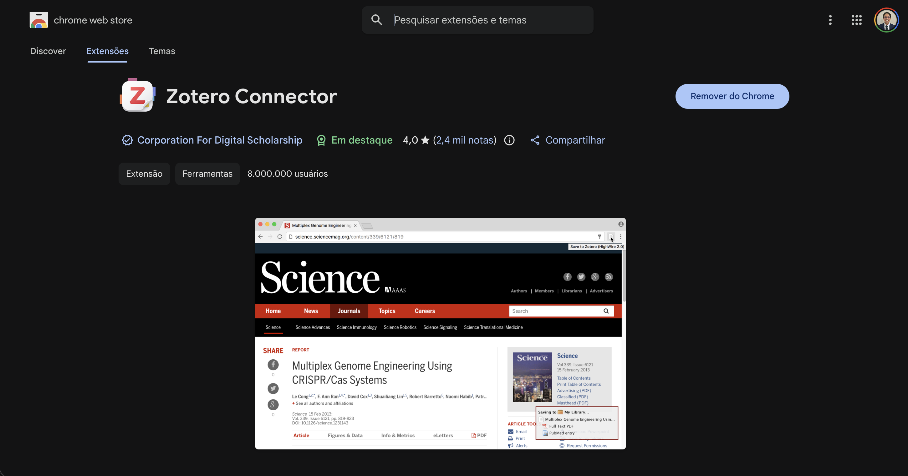
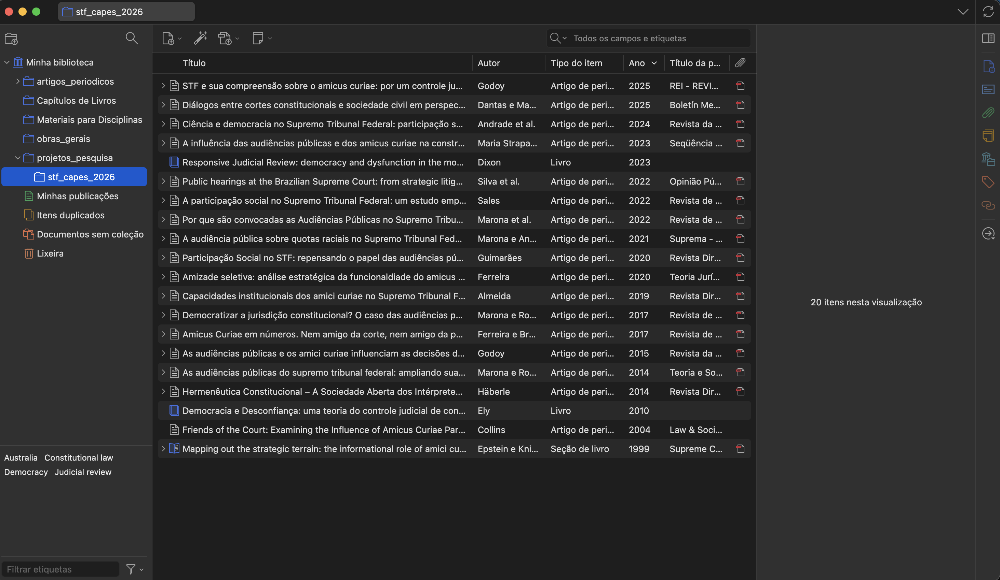
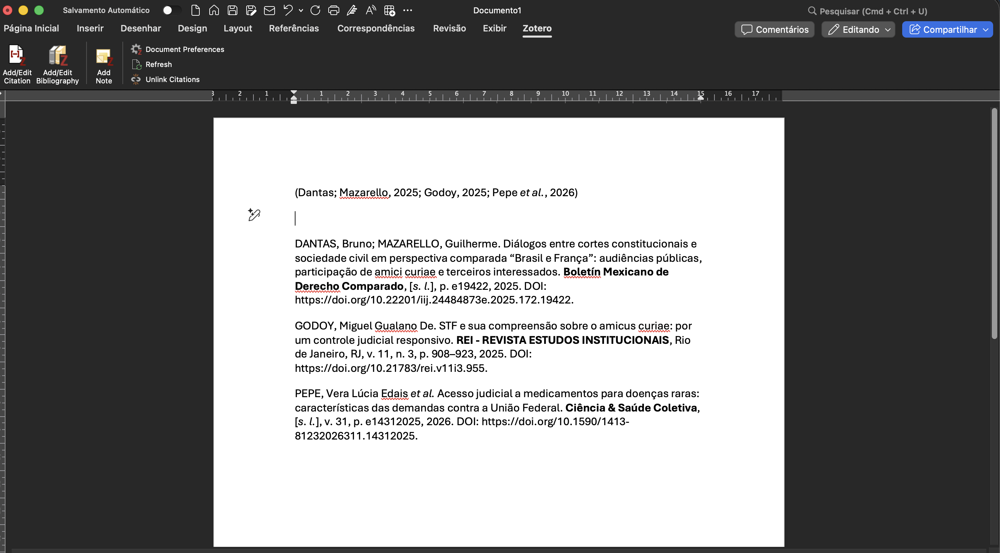
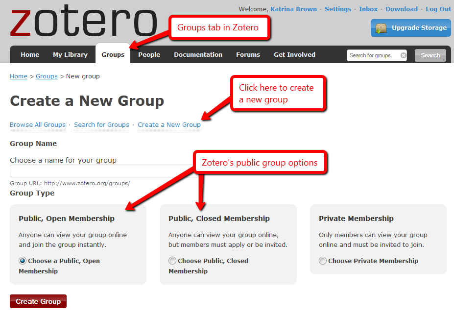

Poupando tempo útil para gastar com o que importa
01 de maio de 2026
Quatro funções centrais
Fluxo típico
| Ferramenta | Licença | Armazenamento gratuito | Integração com editores | Open source |
|---|---|---|---|---|
| Zotero | Gratuita | 300 MB | Word, LibreOffice, Google Docs | Sim |
| Mendeley | Gratuita (Elsevier) | 2 GB | Word, LibreOffice | Não |
| EndNote | Comercial | — | Word | Não |
| JabRef | Gratuita | Local | LaTeX (BibTeX) | Sim |
Foco desta apresentação: Zotero — equilíbrio entre liberdade, recursos e comunidade.
Arquitetura
Interface principal do Zotero 7
Connector no navegador
Outras formas

Funcionamento do Zotero Connector
Recursos

Interface de Biblioteca do Zotero
Leitor nativo (Zotero 7)
Painel de Leitura do Zotero
Plugins instalados por padrão

Integração do Zotero com o Word
Bibliotecas de grupo

Como Montar Grupos no Zotero
Fluxo padrão
Maioria dos usuários
Fluxo avançado
Universidade Federal Rural do Semiárido (UFERSA)